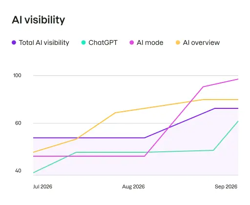
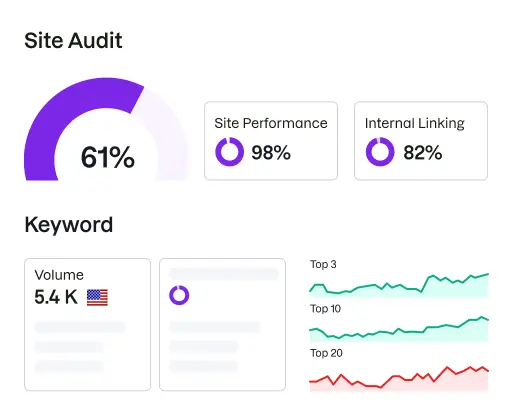
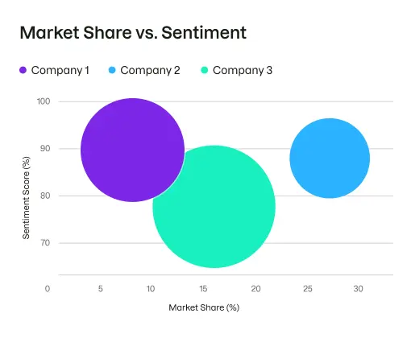
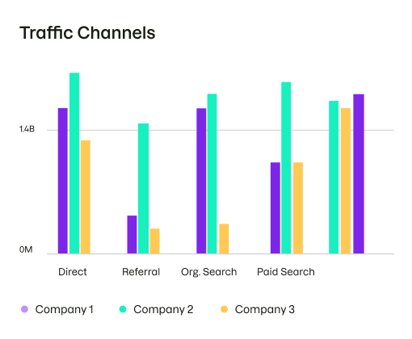
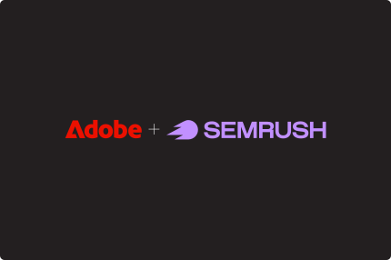
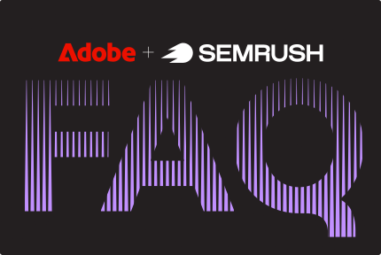
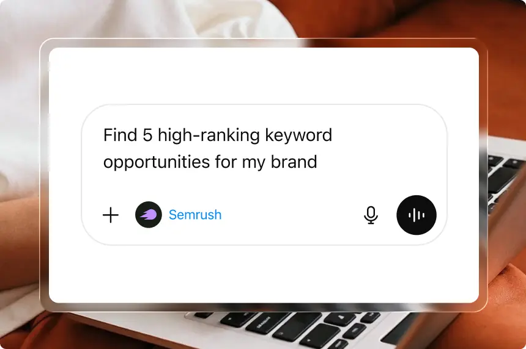
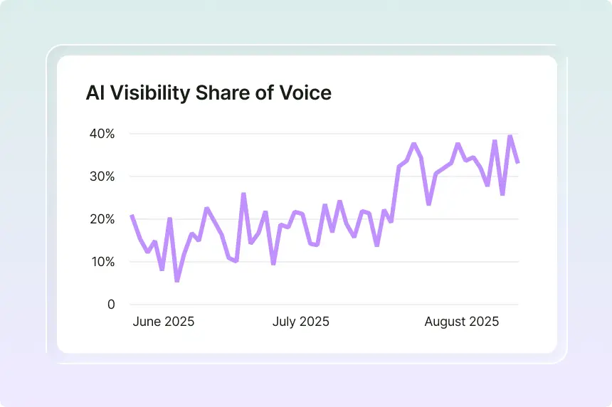
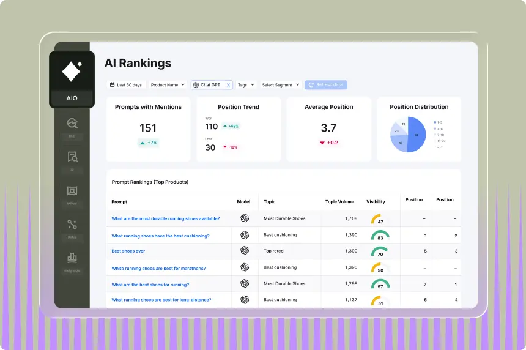

Grow your digital brand visibility
Built for the new era of discovery, Semrush One helps you win everywhere — from traditional SEO to AI search.
The leading platform to grow and measure brand visibility across virtually every digital channel.
Semrush One unites SEO and AI visibility in one place — built on 17 years of search intelligence.
Explore Semrush OneSemrush for Enterprise means brand visibility dominance. Win more customers across markets and domains. Everywhere they search.
Talk to sales
Built for the new era of discovery, Semrush One helps you win everywhere — from traditional SEO to AI search.

Unearth billions of keywords with AI, dissect your backlinks, rankings and traffic potential, and run technical audits to stay on top.

Take control of how you show up in AI answers. Track prompt-level visibility and analyze AI market share against your competition.

Spy on competitors and uncover market trends with the most accurate traffic and market intelligence data on the web.
Plus Content · Local · Advertising · AI PR · Social — 5 more solutions to explore.
More keywords means more ways to win.
Build credibility with the largest database on the market.
Your (secret) market insights superpower.
You're covered all around the world.
Monitor more prompts. Grow your visibility faster.
Explore the strategies powering today's AI search leaders and get clear steps to build your own.
Explore the indexSemrush for Enterprise has been a game-changer for our marketing teams. It's helped us work more efficiently, cutting down on manual tasks so we can focus on what really matters — engaging with our audience and driving growth.

Adobe acquires Semrush to unify brand visibility, SEO, and AI-driven customer experience — helping businesses stay discoverable and drive engagement in an agent-led digital landscape.

Answers to the most important customer questions — covering what changes, what stays the same, and what to expect next from Adobe and Semrush.

The go-to integration to streamline daily tasks and centralize your data. Faster insights, smarter workflows, and visibility built right in to where you work.

How we nearly tripled our AI share of voice and boosted our AI visibility with Enterprise AIO and the AI Visibility Toolkit. A systematic approach with real data.
Academy CourseA free certification course on how AI is changing search. Track prompts, optimize for LLMs, and grow your brand's visibility in AI search.

Simulate real user behavior across AI search with audience-specific prompts. Track visibility more accurately and tailor messaging to how different personas think, search, and decide.
SpotlightJoin us at Spotlight for practical strategies, expert feedback, and a community that has your back. It's one day that makes the next 365 work smarter.
Try Semrush free for seven days. Cancel anytime.
Start free trial